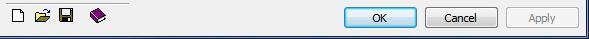

Several BlueZone windows have toolbar buttons facilitating the saving and opening of configuration files for values associated with that specific window. This feature allows subsets of session configurations to be saved and transferred between sessions or users.
The commonly used dialog configuration files are display settings, keyboard map configurations, color settings, and session configurations.

Any BlueZone window that contains these toolbar buttons can be saved or opened as a subset of the main BlueZone configuration file with its own file extension.
Refer to Dialog level configuration profiles for a complete listing of the dialog configuration profile file extensions.